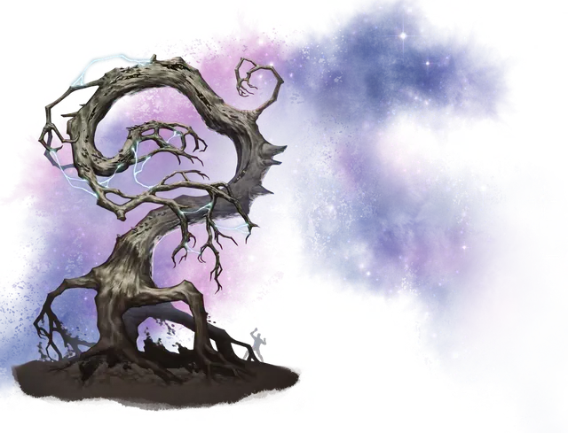

Иггдрасти
Yggdrasti
Громадное Растение, без мировоззрения

Класс Доспеха 15 (природный доспех)
Хиты 112 (9к20 + 18)
Скорость 30 футов, летая 60 футов (парит)
| мод | спас | ||
|---|---|---|---|
| СИЛ | 20 | +5 | +5 |
| ЛОВ | 10 | +0 | +0 |
| ТЕЛ | 15 | +2 | +2 |
| мод | спас | ||
|---|---|---|---|
| ИНТ | 3 | −4 | −4 |
| МДР | 10 | +0 | +0 |
| ХАР | 3 | −4 | −4 |
Уязвимость к урону огонь
Сопротивление урону дробящий, колющий
Иммунитет к урону электричество
Иммунитет к состояниям глухота, истощение, ослепление
Чувства слепое зрение 120 футов (слеп за его пределами), пассивное Восприятие 10
Опасность 7 (2900 опыта)
Бонус мастерства +3
Особенности
Полости. Внутри ствола иггдрасти есть 1к4 + 2 полости. Каждая такая полость достаточно велика, чтобы вместить в себя одно существо Среднего размера или два существа Маленького размера или восемь существ Крошечного размера. Существо внутри дупла получает укрытие в три четверти от атак и других действующих за его пределами эффектов. Полости иггдрасти не соединены друг с другом.
Обманчивая внешность. Если иггдрасти неподвижен со вросшими корнями в землю и выглядит неотличимым от мертвого дерева, то в начале боя имеет преимущество в броске инициативы. Более того, если существо не наблюдало за движением или действием корней иггдрасти, это существо должно преуспеть в проверке Интеллекта (Расследование) Сл 18 для определения, что это нечто иное, нежели обычное дерево.
Молниепроводник. Когда иггдрасти получает урон электричеством, он остается невредимым, а урон вместо этого делится поровну между всеми существами, с которыми он сражается. Кроме того, при этом иггдрасти восстанавливает одно использование Разряда молнии.
Необычная Природа. Иггдрасти не нуждается в воздухе и сне.
Действия
Мультиатака. Иггдрасти совершает две атаки Корнями и использует Разряд молнии (если есть).
Корень. . Рукопашная атака оружием: +8 к попаданию, досягаемость 20 фт., одна цель. Попадание: 12 (2к6 + 5) дробящего урона, и если цель - существо, оно становится схваченным (Сл высвобождения 15). У иггдраси четыре корня и каждый из них может схватить одну цель.
Разряд молнии (3/день). Иггдрасти выстреливает молнией в одно существо, находящееся в радиусе 120 футов. Цель должна совершить спасбросок Ловкости Сл 13, получая 31 (7к8) урона электричеством при провале и получает половину этого урона при успехе.
Описание
Считающиеся отколовшейся щепой от Мирового Древа Иггдрасиль, иггдрасти представляют собой гигантские поросшие мхом мертвые деревья. Они летят через Дикий Космос и Астральное Море указывая направление своими верхними ветвями и волоча за собой иссохшие корни. Каждое из этих деревьев имеет своё собственное гравитационное поле и воздушную оболочку.
Иногда на иггдрасти пытаются проехаться другие существа воспользовавшись его воздушной оболочкой. Обычно в стволе иггдрасти есть полости-дупла, в которых могут прятаться существа Среднего размера и меньше.
Иггдрасти без предупреждения нападают на любые встреченные ими поселения или летучие корабли. Накладывая на него заклинание разговор с растениями [speak with plants] или подобную магию можно попытаться убедить иггдрасти прекратить атаку, но врожденную ненависть монстра к другим живым существам подавить чрезвычайно трудно.
Иггдрасти иногда пристают к какой-либо планете и зарываясь корнями в землю маскируются под обычные деревья. Они могут в любое время выбраться из земли и неуклюже ковыляя на свои корнях передвигаться по поверхности, но предпочтительный способ их передвижения - полёт.